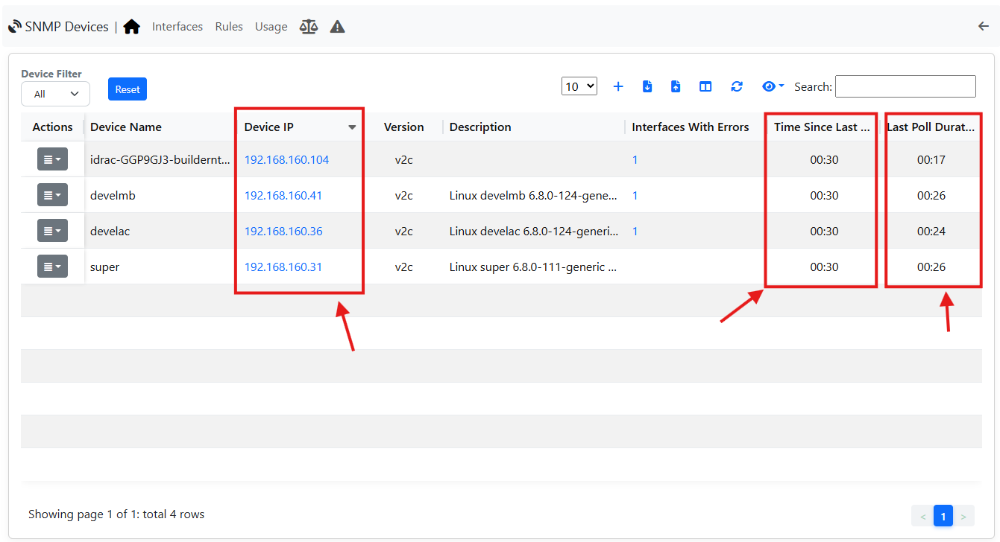
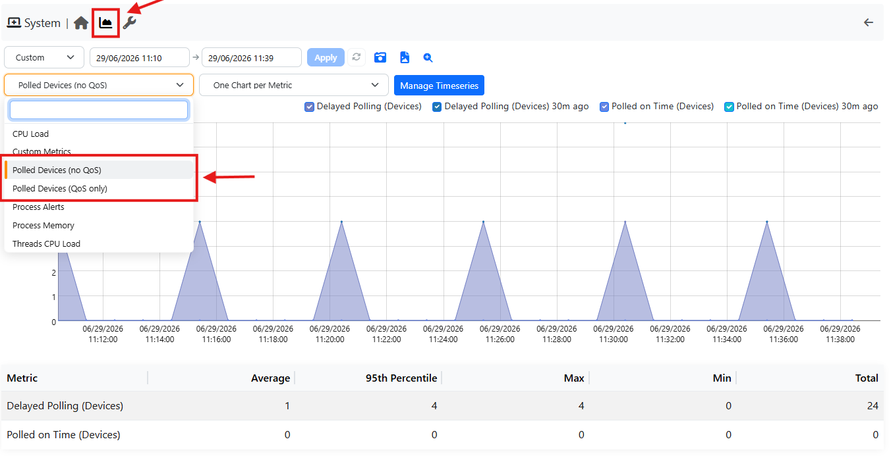

Статистика и устранение неполадок
ntopng периодически опрашивает настроенные SNMP устройства для сбора данных об интерфейсе, статистика системы и производительности.
Однако могут возникнуть проблемы с опрашиваемыми устройствами SNMP (задержка опроса, отсутствие опроса и т. д.).
Есть несколько способов выявить эти проблемы:
Проверив страницу SNMP
Проверяя временные ряды статистики
Проверяем страницу SNMP
Перейдя на страницу SNMP, можно выявить проблемы в опросе, проверив три фактора:
Время с момента последнего опроса: сообщается о последнем опросе устройства;
Продолжительность последнего опроса: сообщает продолжительность последнего опроса;
IP-адрес устройства: здесь, если Устройство недоступно, появится значок, сообщающий о проблеме (он должен быть виден из Время с момента последнего опроса, тоже сообщаю о проблеме)

Проверка таймсерий статистики
ntopng также предоставляет дополнительные временные ряды, которые отслеживают, опрашиваются ли устройства. в соответствии с настроенным интервалом опроса или нет.
Чтобы получить доступ к этим диаграммам, перейдите на страницу «Системный интерфейс», «Здоровье» и затем щелкните значок «Таймсерии»;

На диаграмме показаны два значения с течением времени:
Опрошено вовремя: количество устройств, успешно опрошенных в течение настроенный интервал опроса.
Отложенный опрос: количество устройств, чья операция опроса была задерживается сверх ожидаемого интервала.
Эта информация позволяет администраторам немедленно определять ситуации. где механизм опроса больше не может идти в ногу с настроенным график.
Типичные причины задержки опроса
Растущее количество устройств с задержкой обычно указывает на то, что опрос двигатель перегружен. Возможные причины включают в себя:
Настроено слишком много SNMP устройств.
Медленные сетевые подключения или высокая задержка
SNMP агенты отвечают медленно
Чрезмерное использование CPU на хосте ntopng
Узкие места ввода-вывода на диске или базе данных